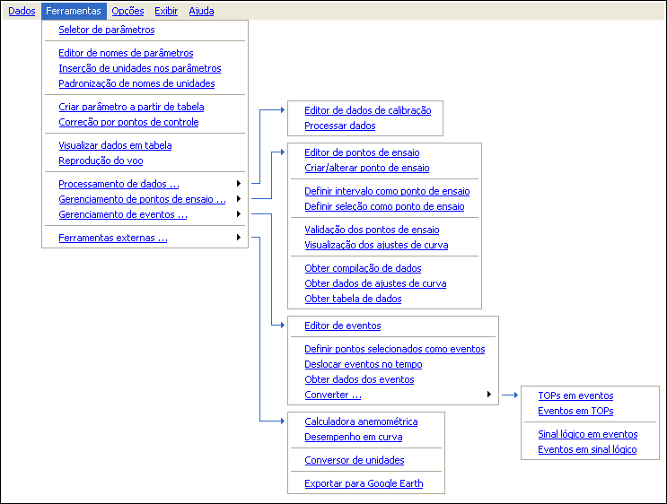

| Menu
Ferramentas |
|
O
menu “Ferramentas” provê acesso a várias ferramentas de manipulação,
processamento, gerenciamento e controle dos dados, pontos de ensaio e
eventos. Através dele é possível realizar as seguintes operações:
- Selecionar e
reordenar os parâmetros desejados em uma lista;
- Editar os nomes
dos parâmetros;
- Inserir e
padronizar os
nomes das unidades;
- Criar parâmetros a partir de dados de uma tabela;
- Corrigir a
evolução de um parâmetro por pontos de controle;
- Reproduzir a
simbologia do HUD e a simbologia tática de um voo;
- Cadastrar curvas e dados de calibração de sensores;
- Processar dados através das curvas de calibração cadastradas;
- Gerenciar os pontos de ensaio (definir, validar, ajustar e obter dados);
- Gerenciar os eventos (definir, converter e obter dados);
- Acessar
ferramentas externas ao R_DAT.
Estrutura
do menu Ferramentas:

|
Nota:
Se durante
alguma operação ocorrer esgotamento de memória RAM para o MATLAB
(mensagem de erro
"OUT OF MEMORY"), poderá ocorrer corrupção das matrizes de
trabalho. Nesse caso, reinicie o R_DAT e recarregue o último
arquivo
salvo (o trabalho
não salvo será perdido). |
| |
Início |
Seletor de
parâmetros |
|